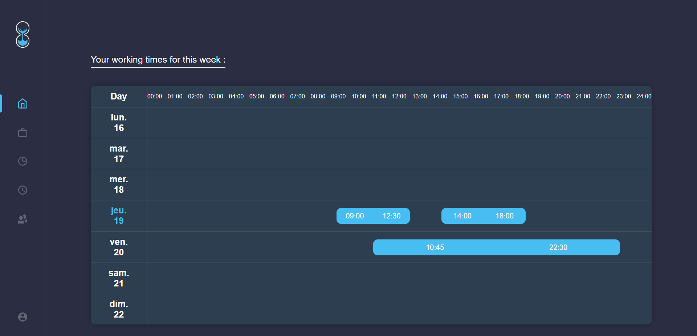
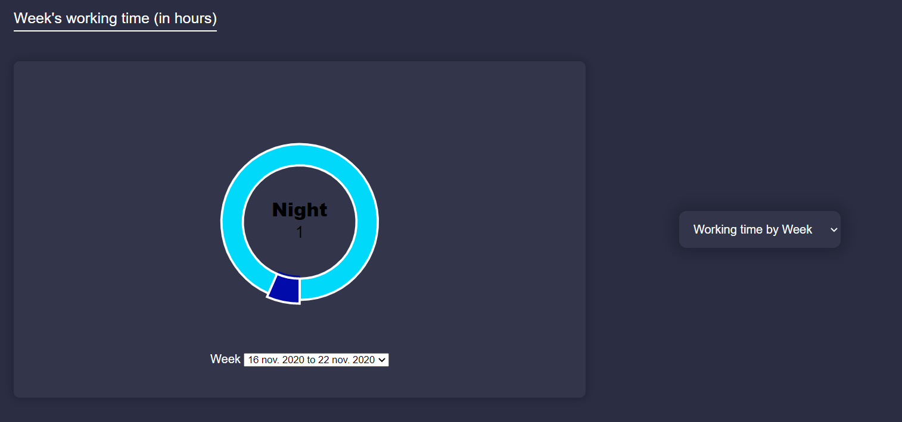
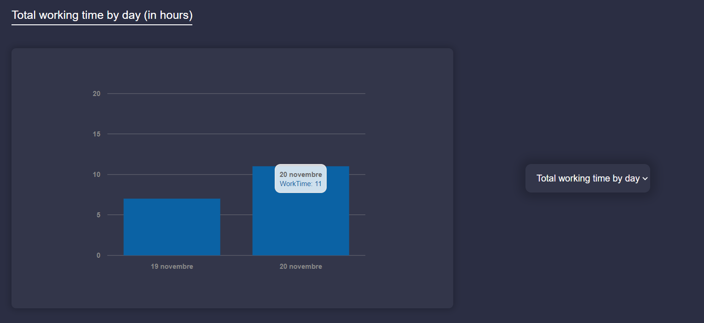

Time Manager
I made this project for my first "piscine" at school.
It was a 3 weeks long "piscine" and the project was in group with a classmate.
This is a (professional) time management wep application.
The concept is pretty simple : all employees of a company have access to the app, they have access to their working times and they can clock in and out
Managers can create new working times to their employees, and edit or delete existing ones.
All users can access their respective informations and managers can access other employees infos.
Main used technologies are Elixir, Phoenix, Vue.js and Docker and Azure for the deploy.
A brief presentation of main features
Application architecture
-Only authentified users can access the application and the API. -The backend is an Elixir REST API. -The frontend is a Vue.js application that communicated with the API, but is completely separated from it. -Data is stored in a Postgres database.
Login and register
Users can login from this form. This sends a sign in request to the API that accepts or rejects connexion. When the user isn't authentified, all routes lead to this page, as only authentified users can access the application. Of course the application uses password hash and other security features...
Only managers can create new users as it is a professional application. All users can edit their password or email but only managers can have acces to, and edit other users informations.
Working times
Calendar
All users have access to their calendar in their home page.
This calendar lists all working times of the week (with start and end time).
Working time List
They can also view their working times in this list that classifies them into 3 categories :
- Today : Today's working times.
- Upcomming : Working times to come, starting the next day.
- Latest : Previous working times.
The user can click on each categorie to expand or hide content. All those categories lists only list 3 working times, but the user can click "Show all" to see more items.
The user can also click on "See more" to get more informations about o working time :
As I'm connected as an admin, I can modify it, delete it or even create a new working time.
Chart manager
This page contains user's statistics. It has 3 chart : -Working time by week : Gives a (selected) week's total worked hours, classified to day and night hours, and overtime. -Total working time : Gives total worked hours, classified to day and night hours, and overtime. -Working time by day : Gives each day's total worked hours.
Working time by week (day/night/overtime):
Total working time by day:
Clock

Every authentified user can access this page to clock in and out.
He can only click the "Start/End" button if there's a working time going on at the moment. This clock is connected to the backend and if there is a clock in but no clock out yet for current working time, it shows an "End time" button instead of "Start time". There is no need to stay in the page or even connected one we clock in, we only need to access the app to clock out at the end of our working time.
The box in the bottom show current (or next if there isn't any running at the moment) working time's informations. In this screen there isn't any working time running, so it shows the next one, so we can't click on the start/end button.
Mobile
Like you saw in the previous screen, the application is fully responsive and adapts to device's screen. We used Cordova because it was requested by he subject but the web application works very good on mobiles.
Deploy
To deploy the app, we used 3 Docker images (backend, frontend and database), which we have deployed on Azure. We also used Github actions to deploy each time we push new modifications.